Altermagnetism: 자화가 상쇄된 결정에서 스핀의 방향을 읽다
반강자성의 대칭에서 전자 밴드와 마그논, 스핀 주입 소자까지
TECH REVIEW · 2026년 11월 6일 · 응집물질물리·계산재료과학·스핀트로닉스
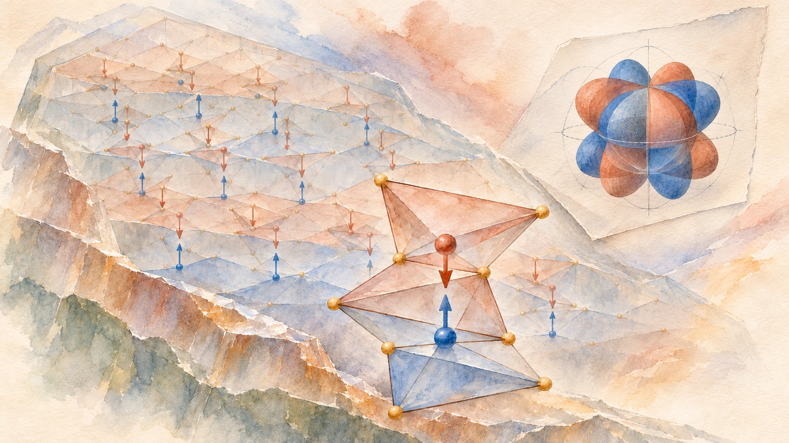
내용 살펴보기
자석의 힘을 바깥으로 크게 드러내지 않으면서, 흐르는 전자의 스핀을 골라낼 수 있을까. 2026년 10월 발표된 한 실험에서는 자화가 거의 상쇄된 Mn₅Si₃ 박막을 스핀 주입기로 사용했다. 100 K에서 박막의 자기상태를 뒤집자, 구리 통로 건너편의 검출기가 읽는 스핀 신호도 바뀌었다. 전체 자화의 합이 작다는 사실과 전류의 스핀 성질이 풍부하다는 사실이 한 장치 안에서 만난 것이다.[3]
이 장면으로 들어가면 altermagnetism에 쏠리는 관심을 이해하기 쉽다. 우리는 자성을 배울 때 원자들의 작은 화살표를 더한다. 같은 방향이면 강자성, 반대 방향으로 상쇄되면 반강자성이다. 그런데 결정 속 전자는 화살표의 합만 보지 않는다. 원자와 리간드가 어떤 방향으로 배열되어 있고, 그 환경에서 전자 파동이 어떻게 퍼지는지도 본다. 국소 모멘트의 합이 0이어도, 특정 운동량에서 위 스핀과 아래 스핀이 같은 에너지를 가질 이유는 따로 물어야 한다.
Altermagnetism은 그 질문에 결정의 대칭으로 답한다. 반대 스핀의 환경이 결정 회전으로 연결되면, 두 스핀의 밴드는 같은 운동량 대신 회전된 운동량에서 서로 대응할 수 있다. 방향에 따라 갈라짐의 부호가 바뀌고, 전체를 합하면 보상된다. 실공간의 반강자성 질서와 운동량 공간의 스핀 분리를 함께 읽는 관점이다.[4]
반자성과 반강자성부터 구별하자
‘반자성’과 ‘반강자성’은 이름이 비슷하지만 서로 다른 질문에 답한다. 반자성(diamagnetism)은 외부 자기장에 반대되는 작은 자화가 유도되는 반응이다. 단순한 선형 관계  에서 자기 감수율
에서 자기 감수율  가 음수다. 반강자성(antiferromagnetism)은 국소 자기모멘트들이 서로 반대 방향으로 정렬하는 자발적 질서다. 반자성 배경 반응은 자기질서를 가진 재료에도 함께 존재할 수 있다.
가 음수다. 반강자성(antiferromagnetism)은 국소 자기모멘트들이 서로 반대 방향으로 정렬하는 자발적 질서다. 반자성 배경 반응은 자기질서를 가진 재료에도 함께 존재할 수 있다.
| 개념 | 무엇을 묻는가 | 전형적인 상태 |
|---|---|---|
| 반자성 | 외부장에 어떻게 반응하는가 | 외부장과 반대 방향의 유도 자화 |
| 상자성 | 외부장이 모멘트를 어느 정도 정렬시키는가 | 장이 없을 때 평균 자화가 사라지는 반응 |
| 강자성 | 모멘트가 어떤 질서로 정렬되는가 | 같은 방향의 정렬과 순자화 |
| 보상된 반강자성 | 반대 국소 모멘트들이 어떻게 상쇄되는가 | 반대 정렬과 작은 전체 자화 |
| Altermagnetism | 상쇄된 자기질서가 전자 상태에 어떤 대칭을 남기는가 | 공선 보상 질서와 방향에 따라 교대하는 비상대론적 스핀 분리 |
두 부분격자의 모멘트를  라 하면, 합
라 하면, 합  와 차
와 차
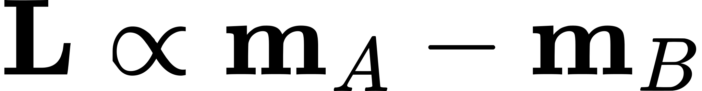
는 서로 다른 정보를 담는다.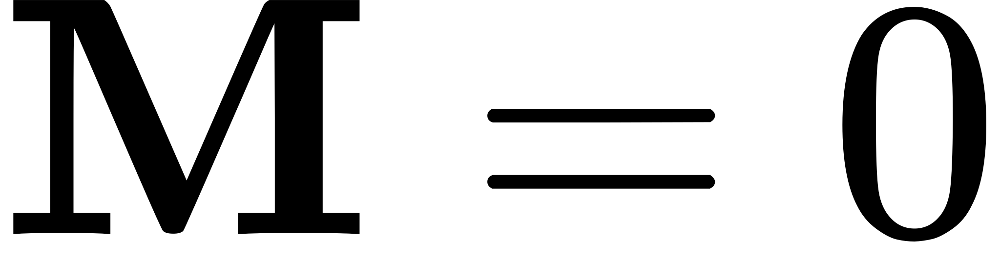
이어도 Néel 질서변수 은 살아 있을 수 있다. 모든 모멘트를 뒤집는 시간반전은 그 질서도 뒤집는다. 자화의 합이 0이라는 사실만으로 시간반전 대칭이 복원되지는 않는다.
은 살아 있을 수 있다. 모든 모멘트를 뒤집는 시간반전은 그 질서도 뒤집는다. 자화의 합이 0이라는 사실만으로 시간반전 대칭이 복원되지는 않는다.
넓은 의미의 반강자성 분류에서 altermagnet은 보상된 공선 반강자성의 대칭적으로 구별되는 종류다. ‘제3의 자성’이라는 표현은 비상대론적 스핀 대칭에 따른 분류를 강조한다. 여기서는 이 공선·보상·비상대론적 정의를 중심으로 설명한다. 실제 재료에서는 스핀–궤도 결합으로 작은 기울어짐과 잔류 모멘트가 생길 수 있으며, 그 크기와 역할은 따로 측정해야 한다.[4]
반대 화살표를 잇는 연산이 달라진다
교과서형 공선 반강자성의 대표 사례에서는, 반대 스핀의 부분격자들이 병진이나 반전과 연결된다. 여기에 스핀을 뒤집는 연산을 결합하면 같은 운동량의 두 스핀 상태를 대응시켜 축퇴를 보호할 수 있다. 반전과 시간반전을 함께 적용하는
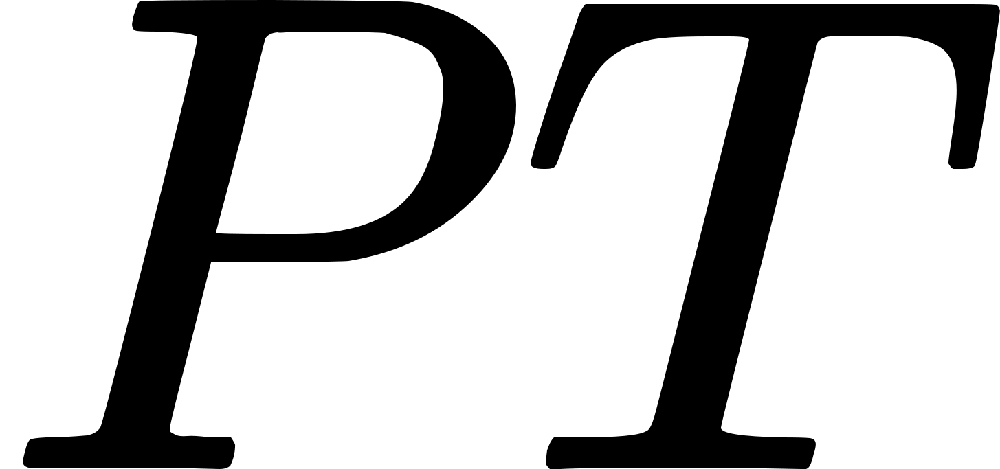
대칭도 그런 보호의 중요한 예다. 어떤 대칭이 작동하는지는 각 결정에서 확인한다.Altermagnet에서는 반대 모멘트의 자리를 둘러싼 비자성 원자들의 방향까지 살펴야 한다. 한 자리가 가로로 길고 다른 자리가 세로로 긴 국소 환경을 가진다고 생각해 보자. 둘을 단순히 옮겨 겹치면 리간드의 방향이 맞지 않는다. 회전까지 해야 같은 환경이 된다. 전자의 궤도 겹침과 원자 사이 이동(hopping)도 그 방향을 따라 달라진다. 교환에 의한 스핀 선택과 결정의 방향성이 결합하면 한 방향에서 유리한 스핀과 다른 방향에서 유리한 스핀이 바뀔 수 있다.[5][6]
스핀–궤도 결합(spin–orbit coupling, SOC)을 무시하는 근사에서는 스핀 공간의 회전과 실제 결정의 회전을 독립적으로 다룰 수 있다. 이를 스핀군(spin group), 더 일반적으로는 스핀 공간군(spin space group)으로 기술한다. 반대 스핀을 바꾸는 연산과 결정 회전  이 함께 대칭이라면, 적절한 밴드 대응 아래 다음 관계가 가능하다.
이 함께 대칭이라면, 적절한 밴드 대응 아래 다음 관계가 가능하다.

 는 결정 속 Bloch 전자의 운동량을 표시하는 파수벡터다. 이 식은 ‘회전된 방향의 위 스핀’과 ‘원래 방향의 아래 스핀’을 연결한다. 일반적인 에서
는 결정 속 Bloch 전자의 운동량을 표시하는 파수벡터다. 이 식은 ‘회전된 방향의 위 스핀’과 ‘원래 방향의 아래 스핀’을 연결한다. 일반적인 에서
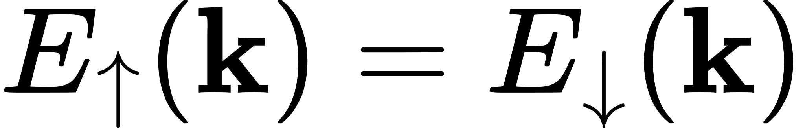
까지 요구하지는 않는다. 방향을 바꿔 합치면 상쇄되지만, 방향을 골라 보면 차이가 남는 이유다.[4][7]이 주된 밴드 분리는 SOC 없이도 나타날 수 있다. 그래서 ‘비상대론적’이라는 수식어가 붙는다. 현실의 SOC는 Néel 질서의 방향을 결정에 고정하고, 교차에 작은 틈을 열며, 스핀 혼합과 일부 Hall·광학 응답을 만든다. 대칭을 이해하려고 SOC를 끄는 계산과 실제 응답을 예측하려고 SOC를 복원하는 계산은 서로 보완한다.
작은 계산으로 보는 스핀 분리와 전체 보상
가장 간단한 2차원 교육 모형으로 이 관계를 직접 확인할 수 있다. 격자상수를 1로 두고, 에너지 단위를 hopping 크기  로 잡자.
로 잡자.
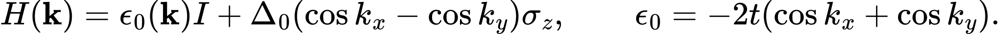
 는 항등행렬,
는 항등행렬,
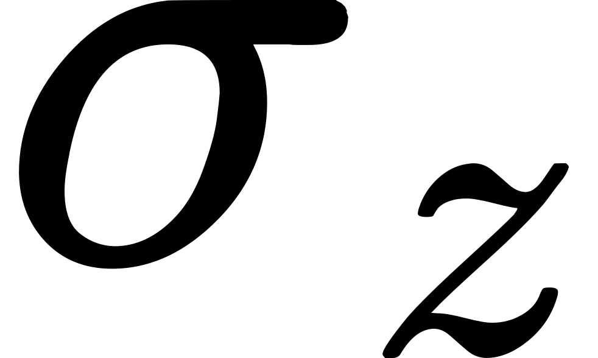
는 두 스핀을 구별하는 Pauli 행렬, 는 방향별 분리의 세기다. 에너지는
는 방향별 분리의 세기다. 에너지는  가 된다.
가 된다.  와
와 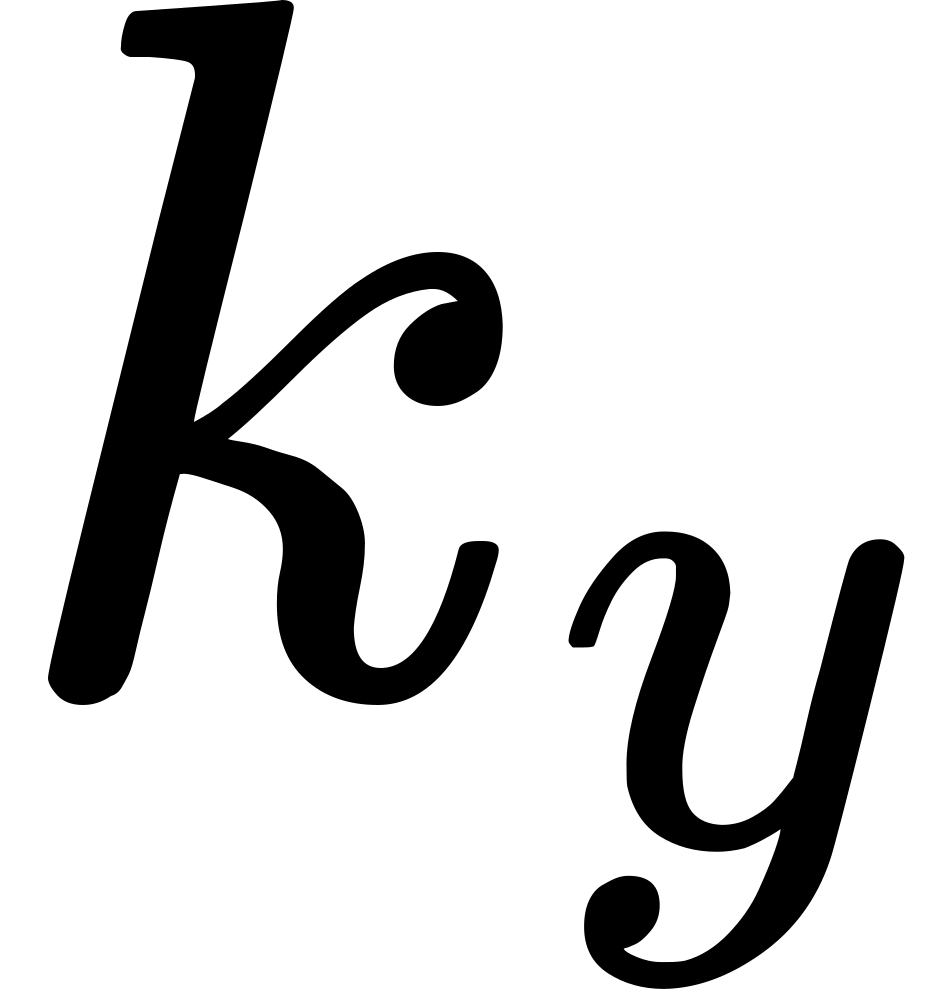
를 교환하면 차의 부호가 바뀐다. 반면 에서는 부호가 유지된다. 대각선
에서는 부호가 유지된다. 대각선 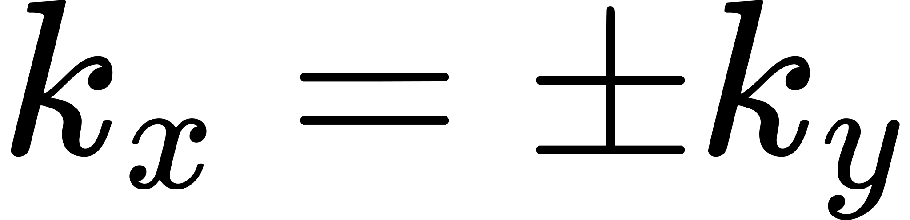
에서는 두 스핀이 다시 만난다.아래 그림의 지도는  를 나타낸다. 따뜻한 영역과 차가운 영역은 어느 스핀의 에너지가 더 높은지를 표시한다. 두 색이 이어지는 대각선은 대칭이 남겨 둔 절점이다. 패널 C에서 X와 Y 방향의 밴드를 비교하면, 한 방향에서 갈라졌던 두 선의 순서가 회전된 방향에서 뒤바뀐다.
를 나타낸다. 따뜻한 영역과 차가운 영역은 어느 스핀의 에너지가 더 높은지를 표시한다. 두 색이 이어지는 대각선은 대칭이 남겨 둔 절점이다. 패널 C에서 X와 Y 방향의 밴드를 비교하면, 한 방향에서 갈라졌던 두 선의 순서가 회전된 방향에서 뒤바뀐다.
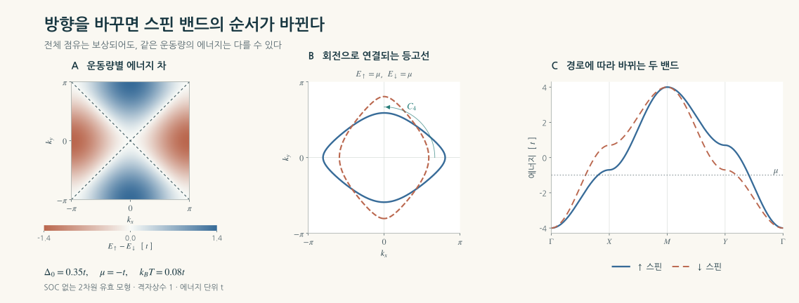
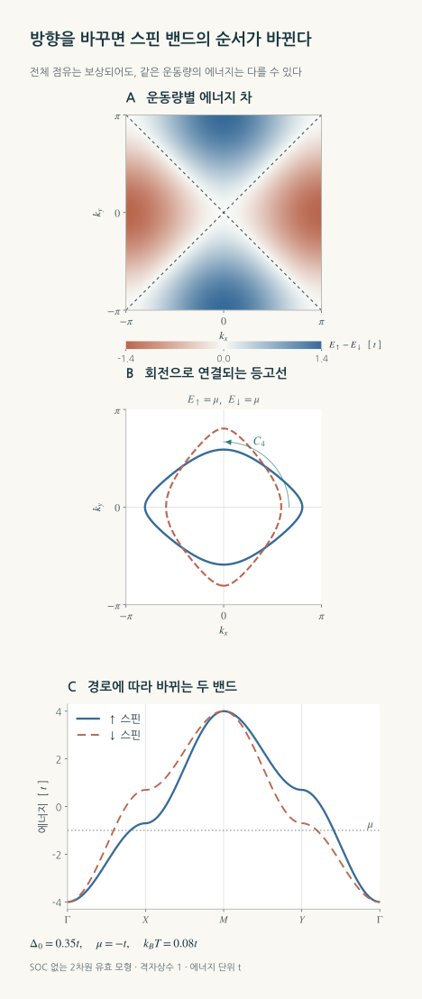
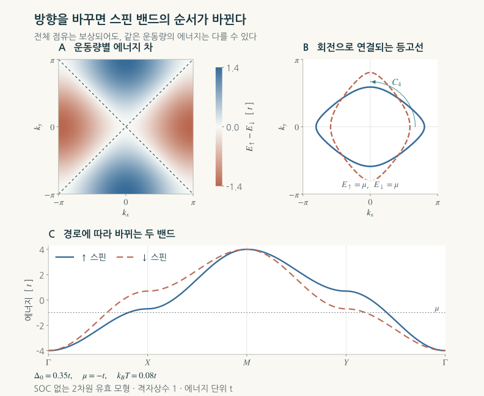
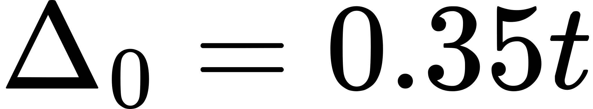
인 교육 모형의 방향별 스핀 분리. 같은 화학 퍼텐셜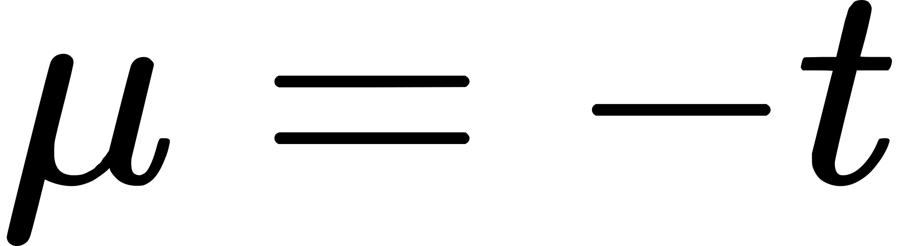
,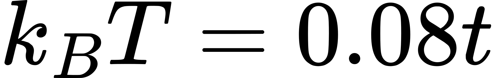
에서 Brillouin 영역을 균등 적분하면 두 스핀의 점유수는 같다. 128×128·256×256·512×512 격자로 계산하고 회전 대응·반전 대칭·대각 절점을 대조했다. 리뷰가 코드로 계산한 2차원 유효 모형이다.두 스핀의 점유수가 같은 까닭은 단순한 숫자 우연이 아니다. 위 스핀이 점유하는 영역을 90도 회전하면 아래 스핀의 점유 영역이 되기 때문이다. 같은 Fermi 분포로 전체 Brillouin 영역을 적분하면 정확히 같은 수를 얻는다. 그렇지만 전류는 전자의 속도와 산란, 흐르는 방향에 가중치를 준다. 평형 점유수의 보상이 수송의 모든 성분까지 상쇄시키지는 않는다.
이 모형에서 스핀 고유벡터는 운동량에 따라 회전하지 않는다. 따라서 Berry 곡률은 0이고, 스핀 밴드가 갈라져도 이 모형의 내재적 전하 anomalous Hall 효과는 0이다. 이 간단한 결과는 계산재료과학에서 유용하다. 밴드 분리, 스핀 전류, 전하 Hall 전압은 각각 계산해야 하는 물리량이다. 실제 재료로 가면 다궤도 파동함수와 SOC, 점유 상태의 구조가 더해진다.
국소 교환과 방향별 전자 이동의 역할을 더 보려면 A·B 두 부분격자를 추가할 수 있다. 부분격자 Pauli 행렬을  ,
,
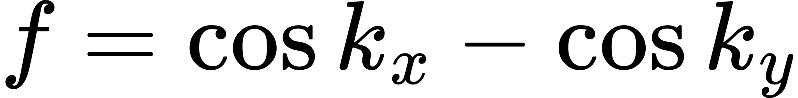
라 놓고 다음 교육 모형을 구성하자.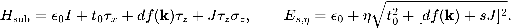
 는 부분격자 사이 혼합,
는 부분격자 사이 혼합,
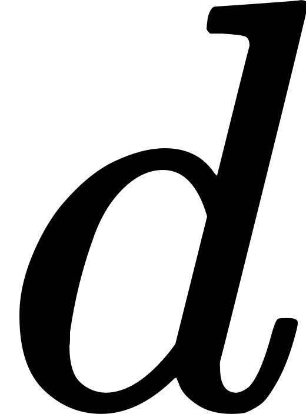
는 서로 회전된 환경의 이방성, 는 A·B에서 반대 부호를 갖는 교환장이다.
는 A·B에서 반대 부호를 갖는 교환장이다. 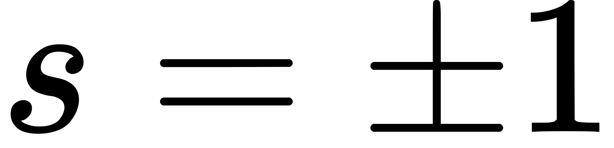
은 스핀,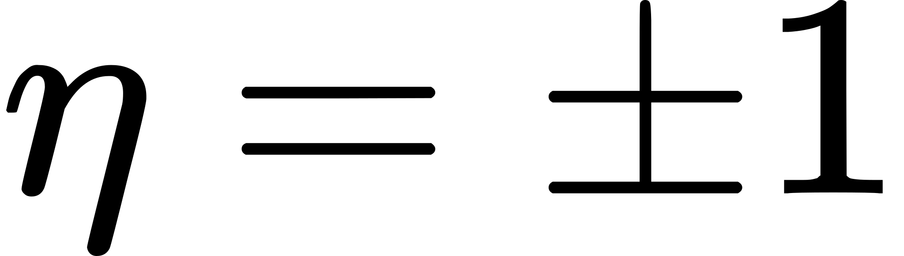
은 혼합으로 생긴 두 에너지 가지다. 이 식에서는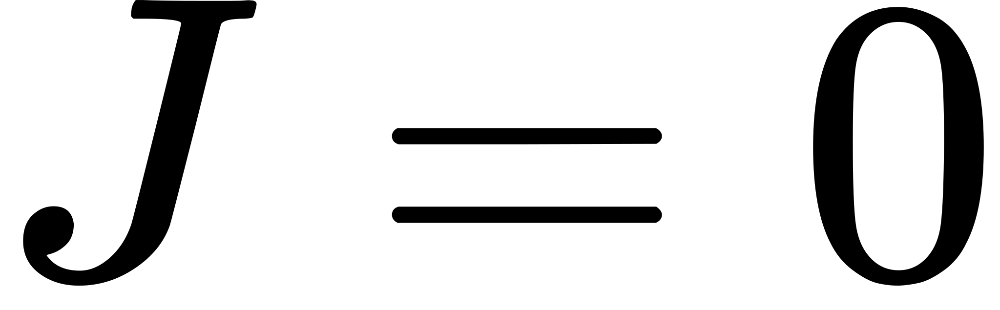
이면 스핀 차이가 없고, 이면 반대 교환장이 있어도 두 스핀의 에너지가 같다. 두 요소가 함께 있을 때 일반적인 운동량에서 갈라진다. 국소 반대 정렬만으로 충분하지 않은 이유가 작은 행렬에서도 드러난다.
이면 반대 교환장이 있어도 두 스핀의 에너지가 같다. 두 요소가 함께 있을 때 일반적인 운동량에서 갈라진다. 국소 반대 정렬만으로 충분하지 않은 이유가 작은 행렬에서도 드러난다.
d-wave와 g-wave는 어떤 무늬인가
방향에 따라 부호가 바뀌는 양을 구면조화함수와 같은 각도 대칭으로 분류하면 d-wave, g-wave, i-wave라는 이름이 나온다. 여기서 말하는 것은 스핀 분리의 운동량 의존성이다. 원자의 d 전자 점유나 초전도 Cooper 쌍의 대칭을 그대로 뜻하지 않는다.
그림 1은 2차원 d-wave다. MnTe와 CrSb에서 많이 논의하는 것은 3차원 g-wave 구조다. CrSb의 한 대칭 허용 저차 조화함수는 좌표를 적절히 잡았을 때
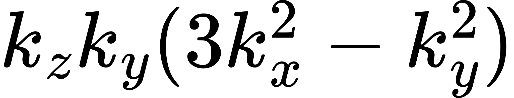
꼴이다. 모든 운동량을 뒤집으면 부호가 유지되지만, 특정 회전이나 절점면을 건너면 부호가 바뀐다. 이는 Γ 근방의 대칭을 드러내는 표현이며, 결정 전체의 주기적인 밴드 분산은 별도 계산으로 구한다.[2]이 차이는 실험 설계에 직접 영향을 준다. 3차원 절점면 위만 지나가는 경로에서는 SOC를 끈 주된 분리가 보이지 않을 수 있다. 다른
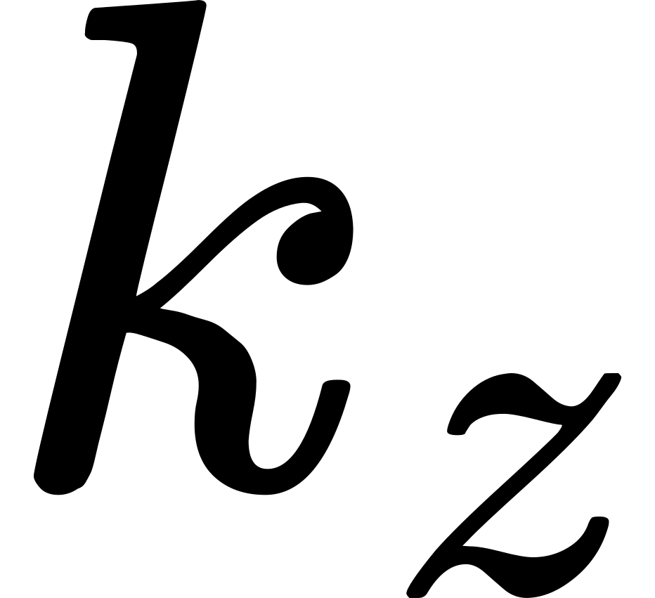
와 회전 방향에서 측정하면 큰 분리가 드러날 수 있다. 따라서 ‘어느 밴드에서 얼마가 갈라졌는가’와 함께 ‘어느 운동량을 보았는가’를 기록해야 한다.누가 먼저 무엇을 발견했는가
이 분야는 하나의 이름이 붙은 날 갑자기 시작되지 않았다. 계산이 먼저 단서를 모았고, 분류가 그 단서들을 공통 원리로 묶었다.
2016년 Noda·Ohno·Nakamura는 MnO₂의 밀도범함수이론(DFT) 계산에서 공선 반강자성의 운동량 의존 스핀 분리를 보고하고, 방향이 다른 배위 환경과 대칭을 분석했다. 2019년 Hayami·Yanagi·Kusunose는 SOC 없이 생기는 분리를 미시 모형과 다중극 관점으로 체계화했다. 2020년 Yuan 등은 중심대칭을 가진 가벼운 원소 반강자성체에서도 큰 분리가 가능함을 제시했다.[5][6][8]
Šmejkal·Sinova·Jungwirth의 2022년 Physical Review X 논문은 스핀 회전과 결정 회전의 결합으로 강자성·통상적 반강자성·altermagnetism을 구별하고, 교대하는 분리와 절점 구조를 하나의 틀로 정리했다. 그 연구의 프리프린트는 2021년에 공개됐다. 이 논문은 개별 계산 결과를 재료군과 실험 질문으로 연결한 중요한 분기점이다.[4]
실험에서도 여러 선구적 작업을 함께 읽어야 한다. Suyoung Lee 등의 한국 연구진은 2024년 1월 MnTe 박막의 전자 분광으로 자기전이와 함께 변하는 분리를 보고했다. 같은 해 Krempaský 등의 연구는 MnTe의 대칭 선택적인 분리를 상세히 추적했다. 이론의 분류, 밴드의 관측, 스핀의 직접 분석, 도메인의 영상화는 서로 다른 성취다.[9][10]
실험은 자성의 어떤 부분을 보는가
각도분해 광전자분광(ARPES)은 빛으로 방출한 전자의 에너지와 방향을 측정해 점유된 밴드를 읽는다. 계산과 비교하면 어느 운동량에서 두 가지가 갈라지는지 확인할 수 있다. 스핀 검출기를 결합한 spin-resolved ARPES는 방출 전자의 스핀 성분도 읽는다. 스핀을 합친 ARPES의 두 봉우리와 스핀을 직접 분해한 신호는 서로 다른 정보를 준다.
Lee 등의 MnTe 박막에서는 전이온도 267 K와 최대 약 370 meV의 분리가 보고됐다. 그 온도는 해당 박막의 조건이다. Krempaský 등의 연구는 비상대론적 절점면과 그 바깥을 구별해 SOC와 주된 분리가 어떻게 나타나는지 설명했다. MnTe에서 보이는 서로 다른 크기의 분리를 같은 경로의 같은 효과로 합치면 중요한 물리를 놓친다.[9][10]
CrSb에서는 Reimers 등이 2024년 연질 X선 ARPES와 계산을 대조해 선택한 경로에서 약 0.6 eV의 분리를 관측했다. 2026년 Long 등은 저온·강한 자기장에서 방향을 회전시키며 벌크 양자진동을 측정해, 분리된 Fermi 면과 g-wave 절점 구조를 추적했다. 양자진동은 자기장에서 전자 궤도가 양자화될 때 생기는 주기적 응답이다. 표면에서 방출된 전자를 보는 분광과 물질 내부의 Fermi 면을 읽는 측정이 서로 다른 약점을 보완한다.[1][2]
또 다른 질문은 한 시료 안에 어떤 도메인들이 있는가다. Amin 등의 2024년 MnTe 연구는 X선 자기 원형·선형 이색성과 현미경을 결합해 도메인·도메인벽·소용돌이 구조를 영상화하고 형성을 제어했다. 선형 이색성은 주로 질서의 축을, 적절한 원형 이색성은 자기상태와 관련된 추가 정보를 준다. 반대 도메인이 섞이면 공간 평균 신호가 약해질 수 있으므로, 국소 영상은 밴드·수송 측정을 해석하는 데도 필요하다.[11]
| 측정 | 직접 읽는 대상 | 계산과 연결할 질문 |
|---|---|---|
| 자화·중성자 회절·μSR | 순모멘트, 자기 배열, 국소 자기장 | 가정한 자기질서가 실제 시료에 존재하는가 |
| ARPES·스핀 분해 ARPES | 전자 분산과 방출 전자의 스핀 | 분리의 방향·절점·온도 변화가 같은 대칭을 따르는가 |
| 자기 이색성 현미경 | 도메인과 질서의 공간 분포 | 평균 신호를 어떤 도메인 비율로 설명할 수 있는가 |
| 편극 중성자·편광 분해 RIXS | 집단 스핀 들뜸의 에너지·편극 | 두 모드의 손잡이성이 운동량에 따라 어떻게 바뀌는가 |
| 수송·비국소 스핀밸브 | 전압, 스핀 주입·전파·검출 | 전자구조의 특성이 실제 접점과 산란을 거쳐 살아남는가 |
전자에서 집단 진동으로 넓어진 발견
자기질서를 조금 흔들면 이웃 스핀들이 연결되어 진동한다. 이 집단 들뜸의 양자가 마그논(magnon)이다. 두 부분격자의 진동에는 서로 반대의 손잡이성, 즉 세차 방향과 스핀 각운동량의 차이가 나타날 수 있다. Altermagnetism은 전자 밴드뿐 아니라 이런 들뜸의 방향 의존성에도 질문을 던진다.
2026년 10월 29일 Jost 등은 MnTe에서 원형 편광에 따른 공명 비탄성 X선 산란(CD-RIXS)의 차이를 측정했다. 운동량에 따라 바뀌는 마그논 편극이 g-wave 구조와 대응했다. 들뜸의 에너지와 함께 스핀 진동의 손잡이성을 읽는 실험이다.[12]
같은 날 Faure 등은 MnF₂의 편극 중성자 산란으로 작은 분리와 모드 사이에서 뒤집히는 chirality를 분석했다. 이 사례는 특히 흥미롭다. 앞선 2025년 측정에서는 분해능 안에서 altermagnetic 마그논 분리가 확인되지 않았고, 지배적인 교환 모형의 높은 유효 대칭이 논의됐다. 새 측정에서 드러난 에너지 분리의 상당 부분은 쌍극자 상호작용으로 설명된다. 그래서 분리 자체와 편극의 부호 변화를 함께 보아야 한다.[13][14]
이 과정은 계산의 역할도 바꾼다. 허용되는 밴드 분리를 그리는 데서 더 나아가, 교환·이방성·쌍극자 항으로 산란 단면적과 편광 의존성을 계산하고 기기의 분해능을 적용해야 한다. 대칭이 허용하는 신호가 실제로 얼마나 큰지, 관측된 신호의 어느 부분이 그 질서에 고유한지까지 설명하는 것이다.
RuO₂가 가르쳐 준 계산과 시료의 관계
RuO₂는 이 분야의 매력을 보여 준 초기 후보이자 가장 중요한 검증 사례다. 2017년 중성자와 DFT+U 연구가 순회형 반강자성 질서를 제안했고, 이후 이 구조를 가정한 Hall·스핀 수송 예측과 전자 분광 해석이 발전했다. 이 후보는 비자성 리간드의 결정 환경이 응답에 미치는 역할을 부각했다.[15][16]
그러나 후속 측정은 강한 반증을 제시했다. Hiraishi 등의 μSR 연구는 기대한 자발적 국소 자기장을 찾지 못했다. Keßler 등은 벌크와 박막을 대조하고 중성자의 다중 산란 문제도 분석했다. 해당 벌크 시료와 분석 모형에서 얻은 질서 모멘트 상한은 Ru당  였다. 뒤이은 전자 분광에서도 예측한 altermagnetic 분리와 맞지 않는 결과가 보고됐다.[17][18][19]
였다. 뒤이은 전자 분광에서도 예측한 altermagnetic 분리와 맞지 않는 결과가 보고됐다.[17][18][19]
계산에서도 민감성이 드러났다. Smolyanyuk 등은 화학양론적 RuO₂의 자기질서가 Hubbard
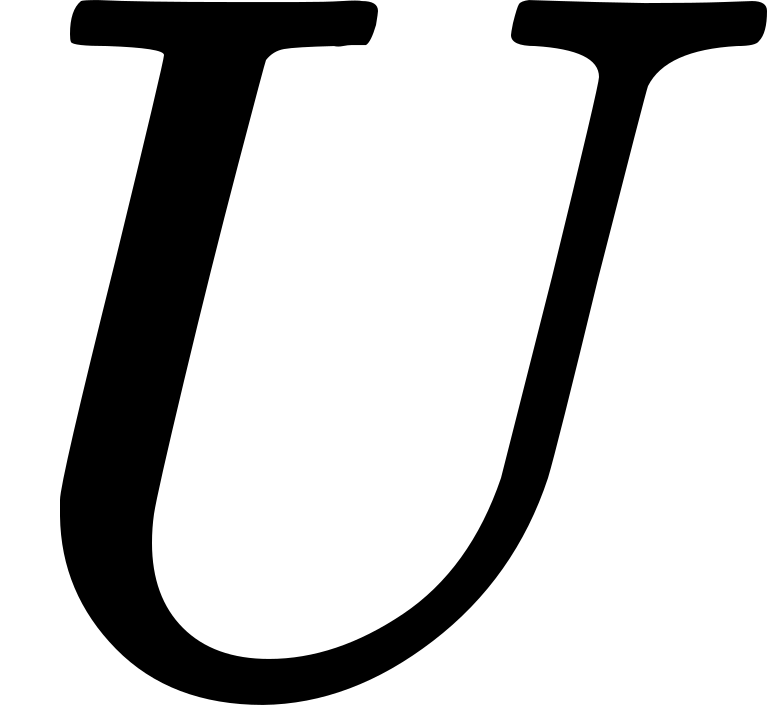
선택에 취약하며, Ru 결손이 자기상태를 도울 수 있음을 분석했다. 특정 AFM 배열을 초기조건으로 넣고 자기모멘트가 수렴했다는 사실과, 그 상태가 실제 바닥상태라는 결론 사이에는 에너지 경쟁과 모형 선택의 문제가 있다.[20]여기에 시료 의존성이 더해진다. 2026년에는 두께 2.7 nm의 변형된 초박막 RuO₂에서 새로운 스핀 텍스처를 보고한 연구도 나왔다. 완화된 벌크와 변형된 계면을 가진 초박막은 같은 계산 입력이 아니다. 현재의 쟁점은 ‘RuO₂’라는 화학식 하나에 찬반을 투표하는 일이 아니라, 어느 구조·결함·두께·변형률에서 어떤 자기상태와 신호가 성립하는지 맞추는 것이다.[21]
계산재료과학의 첫 과제는 자기 바닥상태다
이 분야에서 대칭 판정은 매우 강력하지만, 그 역할은 분명하다. 가정한 자기질서에서 어떤 성질이 허용되는가를 알려준다. 그 질서를 물질이 실제로 선택하는가는 에너지와 안정성의 문제다.
첫 계산은 결정상과 원자 위치·점유율, 실험의 자기구조를 정하는 데서 시작한다. 비자성·강자성·여러 반강자성 배열을 비교하고, 필요하면 큰 단위격자와 비공선·스핀 나선 상태를 포함한다. 격자를 이완하는 동안 처음 가정한 대칭이 바뀌는지도 확인한다. 제약된 자기배열에서 얻은 낮은 전자 에너지와 모든 경쟁 상태 중의 안정성을 구별해야 한다.
다음에는 교환–상관 범함수와 상관 보정의 영향을 본다. DFT+U는 국소 전자 상호작용을 정적으로 다루지만, ·와 projector·이중계수 보정의 선택에 따라 모멘트·틈·상대 에너지가 달라질 수 있다. 동적 상관이 중요하면 DFT와 동적 평균장 이론(DMFT)을 결합해 온도 의존 스펙트럼과 준입자 재규격화를 다뤄야 한다. 원하는 분리가 나오도록 를 고르는 대신, 구조·분광·자기 관측을 동시에 설명하는 범위를 찾는 것이 설득력 있는 계산이다.
유한온도 질서도 별도 과제다. 교환상수와 이방성을 얻어 스핀파·Monte Carlo·원자적 스핀 동역학으로 갈 수 있지만, 순회성이 강하면 고정 크기 모멘트의 Heisenberg 모형이 충분한지 확인해야 한다. 2차원 등방 모형에서는 장파장 요동이 장거리 질서를 어렵게 만든다. 박막의 이방성·층간 결합·기판은 이 점에서도 핵심 입력이다.
예쁜 밴드에서 관측량으로 가는 계산
안정한 후보를 얻은 뒤에는 SOC를 끈 스핀 편극 계산으로 출발해 전체 Brillouin 영역을 살핀다. 한 고대칭 경로가 절점 위에 놓이면 주된 분리를 놓칠 수 있다. 반대로 교차 부근에서 정렬된 밴드 번호끼리 무작정 빼면 궤도 성격이 바뀐 가지를 같은 밴드로 오인할 수 있다. 스핀·궤도 성격과 대칭 대응을 함께 추적해야 한다.
SOC를 복원하면 쉬운 축, 자기 이방성, 미세한 canting, avoided crossing과 실제 스핀 기대값을 계산한다. 이때 전자는 전역적으로 순수한 위·아래 스핀으로 나뉘지 않을 수 있다. 어느 축에 투영한 스핀인지 명시하고  를 읽어야 한다. 스핀 공간군의 SOC 없는 분류와 상대론적 자기 공간군은 각 근사에서 필요한 대칭 도구다.
를 읽어야 한다. 스핀 공간군의 SOC 없는 분류와 상대론적 자기 공간군은 각 근사에서 필요한 대칭 도구다.
수송에는 파동함수와 점유·속도·산란의 정보가 더 필요하다. 내재적 전하 anomalous Hall 전도도는 대표적으로 다음처럼 점유 상태의 Berry 곡률을 적분한다.

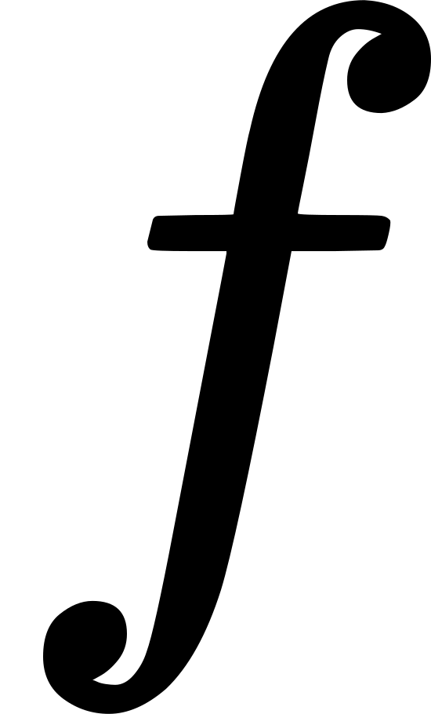
는 점유, 는 밴드 고유상태가 운동량에 따라 변하는 방식에서 얻는 Berry 곡률이다. 남은 대칭이 특정 성분을 금지할 수도 있고, 큰 양·음의 기여가 상쇄될 수도 있다. 작은 SOC 틈 주변의 급한 변화를 Wannier 보간과 촘촘한 격자로 적분하며 에너지 창과 화학 퍼텐셜의 수렴을 확인한다. WannierBerri 같은 도구는 이 계산을 효율화한다.[22]
는 밴드 고유상태가 운동량에 따라 변하는 방식에서 얻는 Berry 곡률이다. 남은 대칭이 특정 성분을 금지할 수도 있고, 큰 양·음의 기여가 상쇄될 수도 있다. 작은 SOC 틈 주변의 급한 변화를 Wannier 보간과 촘촘한 격자로 적분하며 에너지 창과 화학 퍼텐셜의 수렴을 확인한다. WannierBerri 같은 도구는 이 계산을 효율화한다.[22]
이 차이가 실제 재료 설계로 이어진 사례가 2026년 Chen 등의 MnTe 계산이다. 현실적인 정공 도핑 범위에서 Berry 곡률 기여가 상쇄되는 문제를 분석하고, 변형률로 대칭을 바꿔 Hall·Nernst 응답을 키우는 방안을 제안했다. 큰 밴드 분리의 재료를 고르는 것과, Fermi 준위 부근에서 유용한 응답을 설계하는 것은 다른 최적화 문제다.[23]
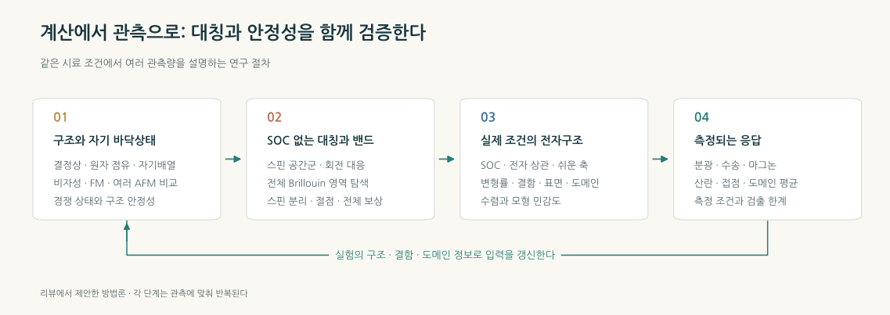
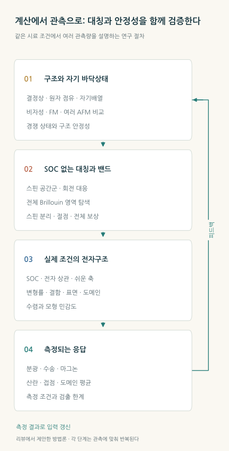
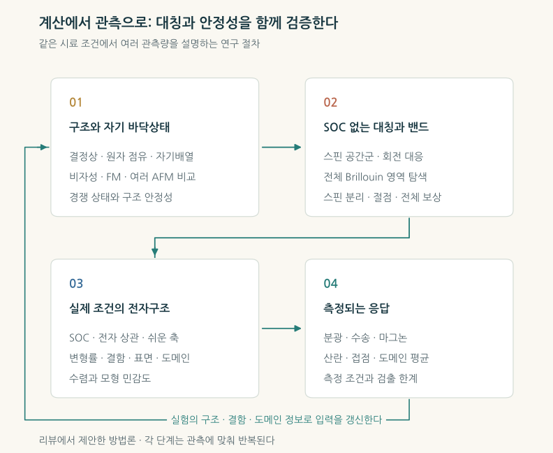
실험과 비교할 때에는 관측의 평균 방식도 계산해야 한다. ARPES에는 표면 종결·광자 에너지·와 전이 행렬원소가, 수송에는 산란·접촉·결정 방향과 도메인 비율이 들어간다. 이상적인 벌크 밴드가 실험과 어긋났다면, 그 차이를 구조·전자 상관·표면·평균 과정 중 어디에서 설명할 수 있는지 분해하는 것이 계산과학의 일이다.
스핀트로닉스가 기대하는 효용
순자화와 누설 자기장을 작게 유지하면서 스핀 편극 전류를 만들 수 있다면, 인접 소자가 서로 간섭하는 문제를 줄일 여지가 있다. 교환에 의해 정해지는 빠른 집단 동역학, 결정 방향에 따른 스핀 선택, Néel 상태의 전기적 읽기·쓰기가 함께 연구되는 이유다. 전하의 이동과 스핀 정보의 전달을 다르게 설계하는 스핀트로닉스의 선택지가 늘어난다.
비상대론적 스핀 분리기로서의 아이디어는 이미 2021년 González-Hernández 등의 제일원리 연구에서 구체적으로 제안됐다. 그 계산은 자기질서를 가정한 RuO₂를 사용했으므로, 메커니즘의 제안과 현재 논쟁 중인 재료 배정을 함께 읽어야 한다.[24]
도입의 Mn₅Si₃ 실험은 이 질문을 주입·전파·검출의 실제 장치로 가져왔다. 다만 해당 박막의 공선 altermagnetic 자기구조를 직접 결정하는 실험은 여전히 과제이며, 미시적 해석에는 대칭·전자구조 계산이 사용된다. 결과가 직접 보여 준 것은 보상된 자석의 시간반전된 상태에 따라 스핀 주입 신호가 바뀐다는 점이다.[3]
전기적 조작에서도 계면이 중요하다. Li 등의 PtTe₂/CrSb 연구는 근접효과로 생긴 계면 모멘트와 SOC를 이용한다. 공개 저자 원고의 대표 전류 유도 전환은 170 K·30 mT 보조 자기장에서 측정됐다. 실제 소자는 벌크의 보상된 질서에 계면·검출·쓰기의 물리를 더해 작동한다. 이 조건에서 얻은 성과를 상온·무보조장 동작으로 확장하려면 접합과 제어 방식을 더 발전시켜야 한다.[25]
앞으로 소자로 평가할 항목은 같은 온도·대역폭에서의 읽기 대비, 쓰기 에너지와 오류율, 상태 유지시간·반복 수명, 시료 간 재현성과 열 관리다. 빠른 마그논 모드의 존재는 이 목표를 매력적으로 만들지만, 접촉과 전류 펄스를 포함한 메모리 한 주기의 속도는 장치에서 측정해야 한다.
다음 발견을 계산으로 설계한다면
계산과학자가 기여하기 좋은 질문은 ‘어느 재료의 분리가 가장 큰가’보다 넓다. 첫째, 같은 시료 조건으로 여러 관측량을 설명할 수 있는가. 구조·결함·변형률을 고정하고 밴드, 자기모멘트, 도메인 방향, 수송의 각도 의존성을 한 모형으로 예측하면 가정의 자유도가 줄어든다. RuO₂의 논쟁은 이 공동 검증의 가치를 보여 준다.
둘째, 원하는 수송 신호가 평균 뒤에도 남는가. Néel 도메인의 반전과 회전, 접점 방향, carrier 농도와 산란을 바꿔 어느 대칭 성분이 살아남는지 계산할 수 있다. 같은 구조에서 SOC를 켜고 끄거나, 교환질서를 제거한 대조 계산을 하면 신호의 원인도 더 구체적으로 분리된다.
셋째, 새 재료를 고르는 기준에 안정성을 함께 넣을 수 있는가. Gao 등의 AI 탐색은 결정 그래프와 제일원리·대칭 검토를 결합해 50개의 계산 후보를 제시했다. 이런 탐색은 화학 공간을 좁히는 데 유용하다. 후속 단계에서는 여러 자기배열의 경쟁, 구조의 안정성, 상관 보정의 민감도와 만들 수 있는 박막·결함 조건을 평가해야 한다. 후보 수와 실제로 합성·검증된 재료 수는 다른 지표다.[26]
Altermagnetism의 물리적 의의는 ‘0’이라는 숫자 안에 사라져 있던 정보를 되찾는 데 있다. 자화의 합으로 보면 같은 보상 상태라도, 전자가 지나가는 방향과 스핀 파동의 손잡이성에는 결정의 질서가 남는다. 대칭은 그 무늬를 예측하고, 계산은 얼마나 큰 신호가 어디에서 생길지 묻고, 실험은 실제 시료에서 그 대응을 시험한다. 지금의 흥미는 이 세 작업이 전자 밴드에서 집단 들뜸과 장치의 전류로 함께 진행되고 있다는 데 있다.
참고문헌
- [1]
S. Reimers, L. Odenbreit, L. Šmejkal, V. N. Strocov, P. Constantinou, A. B. Hellenes, R. Jaeschke Ubiergo, W. H. Campos, V. K. Bharadwaj, A. Chakraborty, T. Denneulin, W. Shi, R. E. Dunin-Borkowski, S. Das, M. Kläui, J. Sinova, and M. Jourdan, Direct observation of altermagnetic band splitting in CrSb thin films, Nat. Commun. 15, 2116 (2024).
- [2]
M. Long, T. I. Weinberger, Z. Wu, M. F. Hansen, R. Tao, M. Shrestha, D. Graf, Y. Skourski, F. M. Grosche, and A. G. Eaton, 3D bulk-resolved g-wave altermagnetic order parameter in CrSb, Nature 656, 854–860 (2026).
- [3]
J. Mencos et al., Time-reversal-symmetry-breaking spin injection from a compensated magnet, Nature 659, 69–75 (2026).
- [4]
L. Šmejkal, J. Sinova, and T. Jungwirth, Beyond conventional ferromagnetism and antiferromagnetism: A phase with nonrelativistic spin and crystal rotation symmetry, Phys. Rev. X 12, 031042 (2022).
- [5]
Y. Noda, K. Ohno, and S. Nakamura, Momentum-dependent band spin splitting in semiconducting MnO2: a density functional calculation, Phys. Chem. Chem. Phys. 18, 13294–13303 (2016).
- [6]
S. Hayami, Y. Yanagi, and H. Kusunose, Momentum-dependent spin splitting by collinear antiferromagnetic ordering, J. Phys. Soc. Jpn. 88, 123702 (2019).
- [7]
X. Chen, J. Ren, Y. Zhu, Y. Yu, A. Zhang, P. Liu, J. Li, Y. Liu, C. Li, and Q. Liu, Enumeration and representation theory of spin space groups, Phys. Rev. X 14, 031038 (2024).
- [8]
L.-D. Yuan, Z. Wang, J.-W. Luo, E. I. Rashba, and A. Zunger, Giant momentum-dependent spin splitting in centrosymmetric low-Z antiferromagnets, Phys. Rev. B 102, 014422 (2020).
- [9]
S. Lee, S. Lee, S. Jung, J. Jung, D. Kim, Y. Lee, B. Seok, J. Kim, B. G. Park, L. Šmejkal, C.-J. Kang, and C. Kim, Broken Kramers degeneracy in altermagnetic MnTe, Phys. Rev. Lett. 132, 036702 (2024).
- [10]
J. Krempaský et al., Altermagnetic lifting of Kramers spin degeneracy, Nature 626, 517–522 (2024).
- [11]
O. J. Amin et al., Nanoscale imaging and control of altermagnetism in MnTe, Nature 636, 348–353 (2024).
- [12]
D. Jost, R. B. Regmi, E. G. Lomeli, S. Sahel-Schackis, M. Scheufele, M. Neuhaus, R. Nickel, F. Yakhou, K. Kummer, N. B. Brookes, L. Shen, G. L. Dakovski, N. J. Ghimire, S. Geprägs, and M. F. Kling, Chiral altermagnon in MnTe, Science 394, 541–543 (2026).
- [13]
Q. Faure, D. Bounoua, V. Balédent, A. Gukasov, V. O. Garlea, A. Ribeiro, J. G. Rau, S. Petit, and P. McClarty, Altermagnetism revealed by polarized neutrons in MnF2, Science 394, 544–548 (2026).
- [14]
V. C. Morano, Z. Maesen, S. E. Nikitin, J. Lass, D. G. Mazzone, and O. Zaharko, Absence of altermagnetic magnon band splitting in MnF2, Phys. Rev. Lett. 134, 226702 (2025).
- [15]
T. Berlijn, P. C. Snijders, O. Delaire, H.-D. Zhou, T. A. Maier, H.-B. Cao, S.-X. Chi, M. Matsuda, Y. Wang, M. R. Koehler, P. R. C. Kent, and H. H. Weitering, Itinerant antiferromagnetism in RuO2, Phys. Rev. Lett. 118, 077201 (2017).
- [16]
L. Šmejkal, R. González-Hernández, T. Jungwirth, and J. Sinova, Crystal time-reversal symmetry breaking and spontaneous Hall effect in collinear antiferromagnets, Sci. Adv. 6, eaaz8809 (2020).
- [17]
M. Hiraishi, H. Okabe, A. Koda, R. Kadono, T. Muroi, D. Hirai, and Z. Hiroi, Nonmagnetic ground state in RuO2 revealed by muon spin rotation, Phys. Rev. Lett. 132, 166702 (2024).
- [18]
P. Keßler, L. Garcia-Gassull, A. Suter, T. Prokscha, Z. Salman, D. Khalyavin, P. Manuel, F. Orlandi, I. I. Mazin, R. Valentí, and S. Moser, Absence of magnetic order in RuO2: insights from μSR spectroscopy and neutron diffraction, npj Spintronics 2, 50 (2024).
- [19]
J. Liu et al., Absence of altermagnetic spin splitting character in rutile oxide RuO2, Phys. Rev. Lett. 133, 176401 (2024).
- [20]
A. Smolyanyuk, I. I. Mazin, L. Garcia-Gassull, and R. Valentí, Fragility of the magnetic order in the prototypical altermagnet RuO2, Phys. Rev. B 109, 134424 (2024).
- [21]
Y. Zhang et al., Observation of mirror-odd and mirror-even spin texture in ultrathin epitaxially strained RuO2 films, Sci. Adv. 12, eaec2917 (2026).
- [22]
S. S. Tsirkin, High performance Wannier interpolation of Berry curvature and related quantities with WannierBerri code, npj Comput. Mater. 7, 33 (2021).
- [23]
W. Chen, Z. Zhou, J. Meng, W. Wang, Y. Yang, and Z. Li, Strain engineering of the intrinsic anomalous Hall and Nernst effects in altermagnetic MnTe at realistic doping levels, Phys. Rev. B 114, L140405 (2026).
- [24]
R. González-Hernández, L. Šmejkal, K. Výborný, Y. Yahagi, J. Sinova, T. Jungwirth, and J. Železný, Efficient electrical spin splitter based on nonrelativistic collinear antiferromagnetism, Phys. Rev. Lett. 126, 127701 (2021).
- [25]
Z. Li, W. He, H. Bai, Y. Wang, A. J. Grutter, G. Shi, X. Zhang, C. Kinane, A. Caruana, H. R. Tan, Y. Pu, C. Zhang, Y. Wang, H. Park, A. Soumyanarayanan, L. Shen, and H. Yang, Electrical manipulation and detection of perpendicular altermagnetic order via a proximitized Dirac semimetal, Nat. Mater. (2026).
- [26]
Z.-F. Gao, S. Qu, B. Zeng, Y. Liu, J.-R. Wen, H. Sun, P.-J. Guo, and Z.-Y. Lu, AI-accelerated discovery of altermagnetic materials, Natl. Sci. Rev. 12, nwaf066 (2025).
작성·검증 정보
책임 편집자는 김현중이며, 이 원고는 요청한 주제에 대한 AI 보조 작성본이다. 근거 기준일은 2026년 11월 6일이다. 원 논문·공개 저자 원고·출판 서지를 대조했고, 출판본과 프리프린트의 측정 조건을 구별했다. Science 등의 최종 전문 접근이 제한된 경우에는 확인한 초록·저자 원고의 범위에서 기술했다.
OpenAI Codex의 root가 종합 집필·교육 계산·표지·조판을, altermagnet_pioneers가 원리·선행 연구·주요 실험과 서지를, altermagnet_computation이 대칭·제일원리·상관·수송 방법론을, altermagnet_repo_evidence가 실험 조건과 기존 리뷰 중복을 검토했다. 정확한 모델 식별자는 미보존이다. AI Tech Review Editorial Harness v2026.08 및 현행 과학 설명·문체·표지·APS 인용 기준을 적용했다.
그림 1의 유효 모형과 부분격자 확장 모형을 수치·해석으로 검산했다. 재료의 DFT·DMFT·실험을 독립 재현한 작업은 아니다. 표지는 검증한 CrSb 배위와 g-wave 부호 모형을 참고한 AI 생성 수채화 개념 그림이고, 본문 도표는 코드로 제작했다. 표지 재설계에는 altermagnet_watercolor_art_director의 미술 방향, altermagnet_visual_physics의 구조·대칭 감수, altermagnet_visual_story_editor의 시각 서사 검토를 반영했다. 사람의 주제·작성 요청과 문장별 승인·독자 평가를 구분하며, 현재 기록에는 후자의 수행이 없다. 계산 코드와 결과, 그림별 출처·제작 정보는 이 리뷰의 제작 자료에 보존한다.